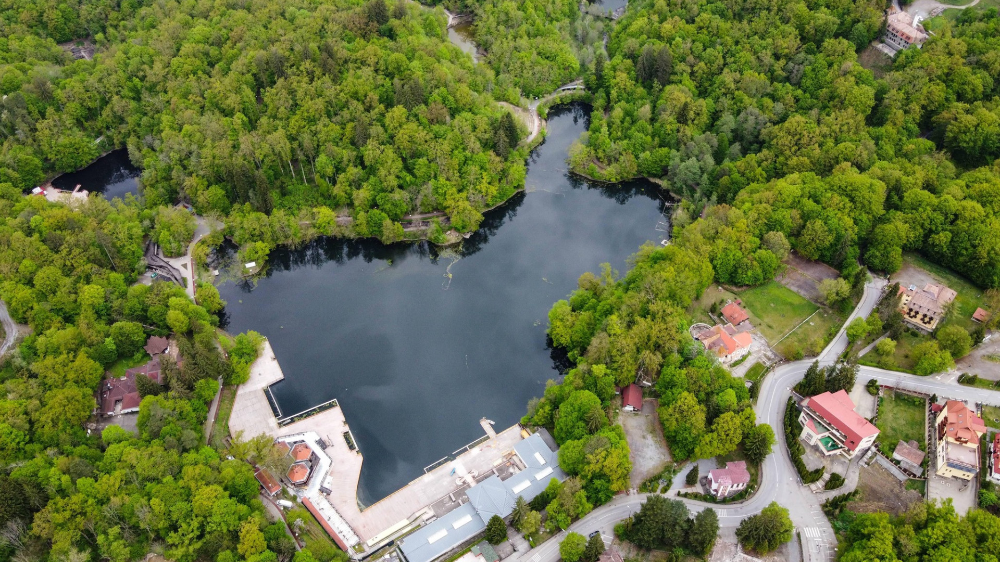

A Medve-tó

Főbb információk a Medve-tóról:
- A Medve-tó alakjáról kapta a nevét — kinézete olyan, mintha egy “medvebőr” lenne kifeszítve.
- A tó egy heliotermikus tó — azaz a felső réteg édesvízként viselkedik, amely megakadályozza, hogy a
napsugárzás által felmelegített, sűrűbb vízréteg felszínre emelkedjen és lehűljön.
- Régebben a legmelegebb rétegekben akár 80 °C-ot is mértek, de a fürdőzők jelenléte és az édesvíz beáramlása
miatt azóta csökkent.
- A tó területe ~ 4 hektár, mélysége ~ 18 méter.
- A magas sótartalom miatt gyakran az erdélyi Holt‑tengernek is nevezik. Fél méteres mélységben a sótartalom
elérheti a 20%-ot.
- Nyáron (jellemzően június végétől) fürödésre is van lehetőség, de csak egy kijelölt részben, belépő jegy
ellenében.
- A strand reggel 10:00-tól délután 18:00-ig van nyitva, és délben (13:00–15:00) szünetet tartanak, amikor a
tó pihen (fürdőzők nem tartózkodhatnak a vízben).
- A tó körül kiépített sétányok vannak, alkalmasak babakocsival és kerekesszékkel is, bár az egyik végén
lépcsők is vannak.
- Piknikezésre, pihenésre alkalmas helyek, padok, asztalok is találhatók, illetve kültéri tornagépek és
futósáv is vannak.
- Ide kattintva többet is megtudhatsz